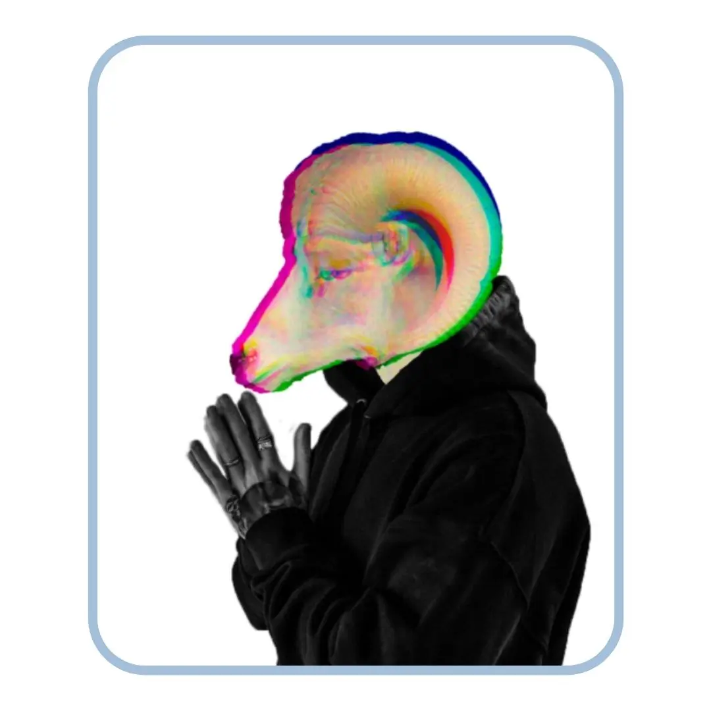
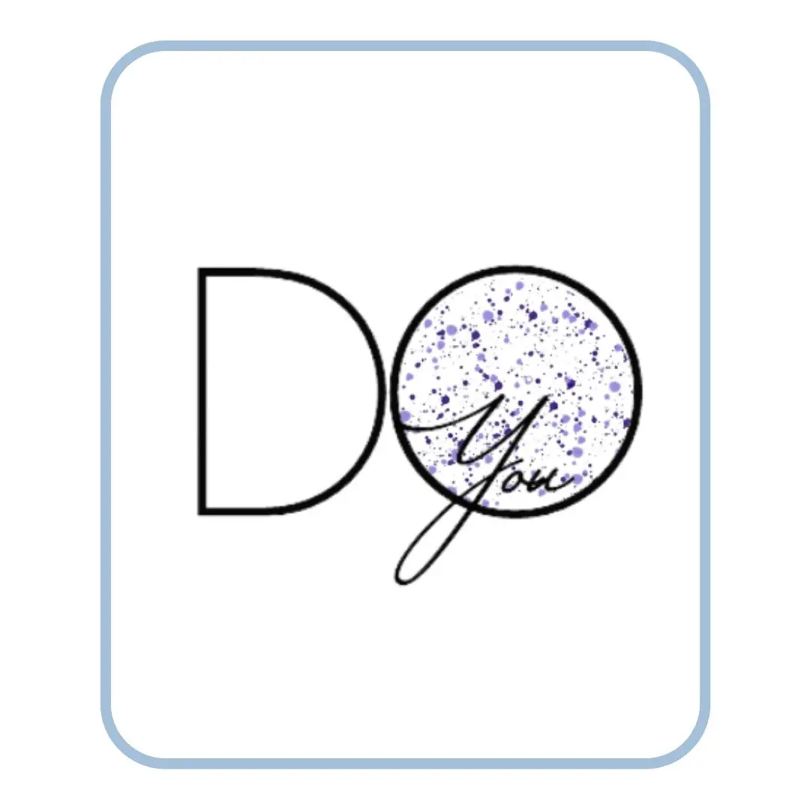
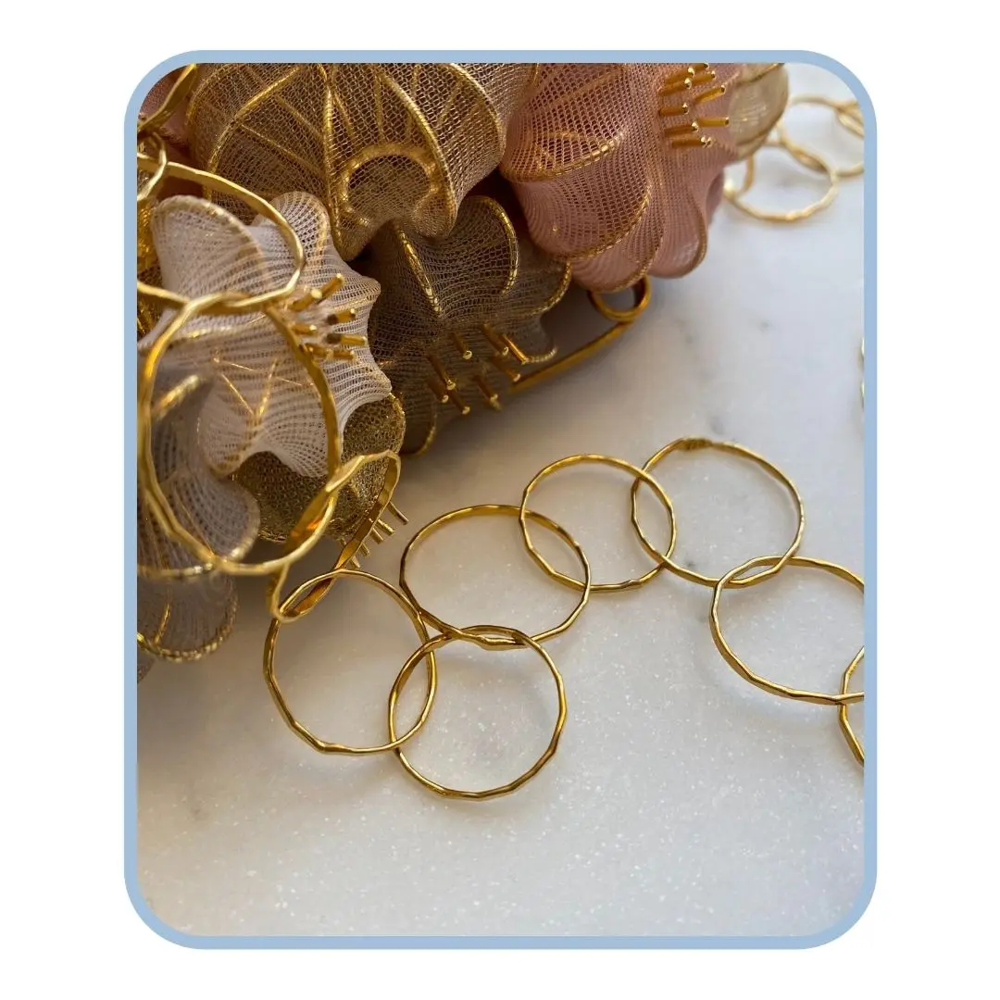

Portfolio
Julie Lykke Hegelund
Portfolio

Webdesign

UX

Indhold
Aspirerende multimediedesigner
- & fremtidig globetrotter
Min vision med uddannelsen, multimediedesigner bunder i en drøm om at kunne rejse verden rundt. Dét at kunne arbejde verden rundt, så længe du har din computer med i kufferten en drøm jeg altid har haft. Jeg elsker derfor at gå ture langs Amager strandpark og se flyvemaskinerne, fordi det minder mig om de mange muligheder fremtiden byder på.